dialect of ClojureCan compile to javascript (the feature ?)
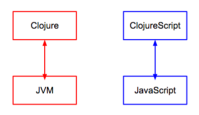
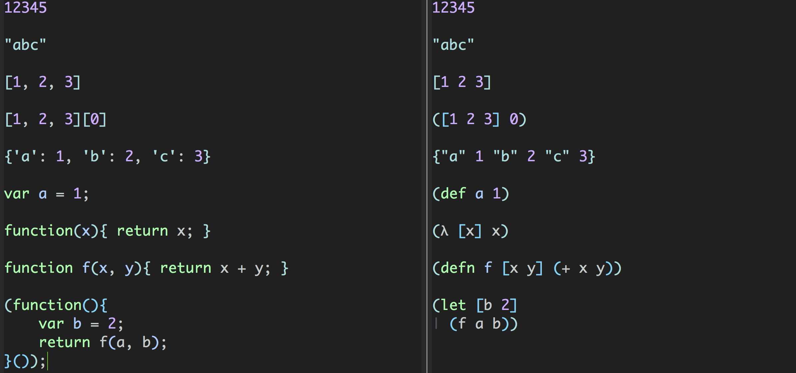
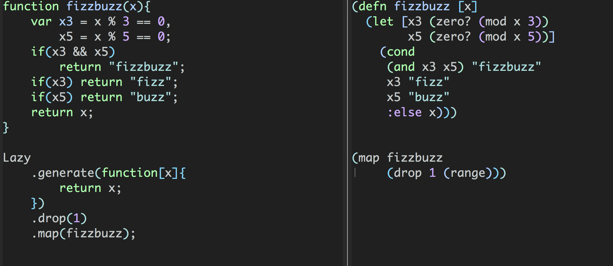
cljs
(js/alert "Hello, world!") ; => nil (.log js/console "Log message") ; => nil (.-href (.-location js/document)) ; => http://localhost/
js
alert("Hello, World!")
console.log("Log message")
document.location.href
cljs example
(js/alert "Hello, world!") ; => nil (.log js/console "Log message") ; => nil (.-href (.-location js/document)) ; => http://localhost/
js namespace(.method instance args)(.-fieldname instance)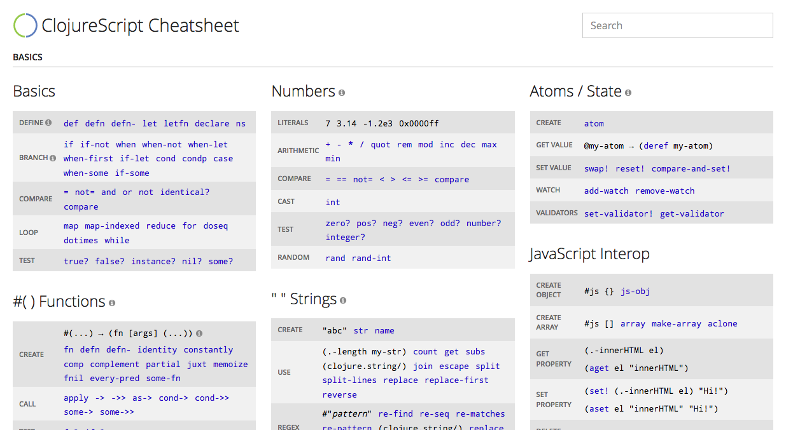
It's recommand to use following template to getting start
lein-cljsbuild is Leinigen pluging for cljs compiler
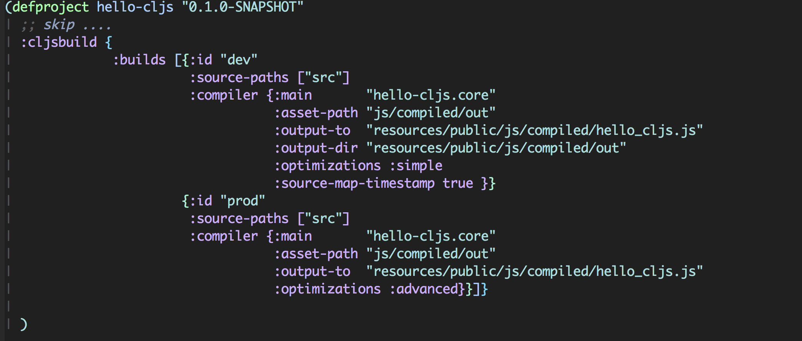
For boot, we use boot-cljs for cljs compiler setting
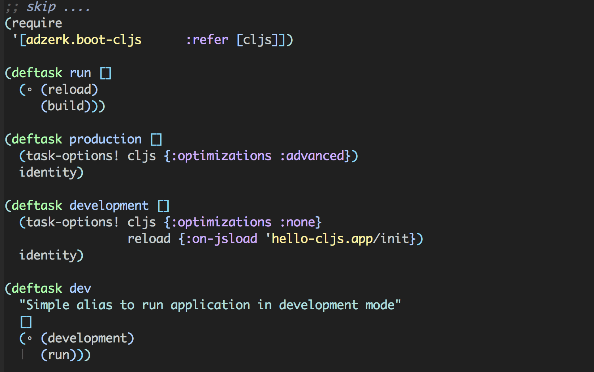
4 level
(ns example.app) (defn fn1 [] (println "FN1!!")) (defn ^:export fn2 [] (println "FN2!!"))
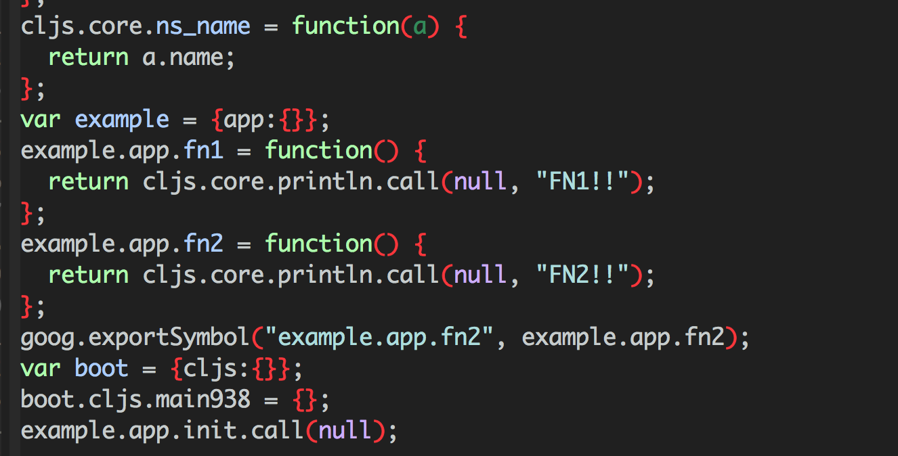
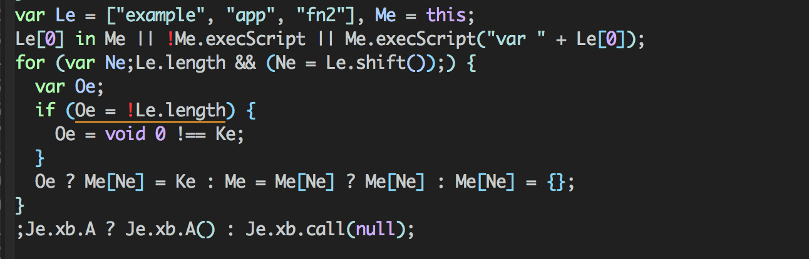
Just modify you :compiler setting and add :target :nodejs
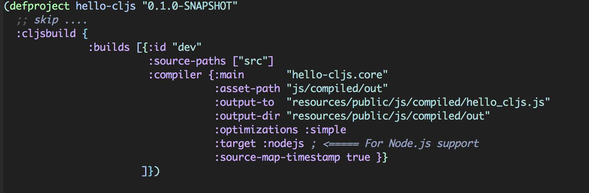
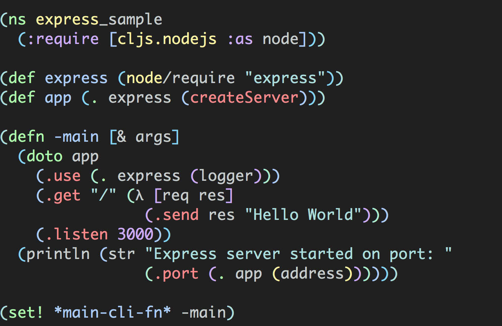
In ClojureScript, we can use clj->js and js->clj to cnovert data from js/cljs
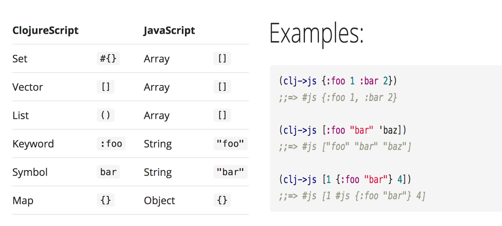
lein-doo is a library and lein plugin to run cljs.test on different js environments.
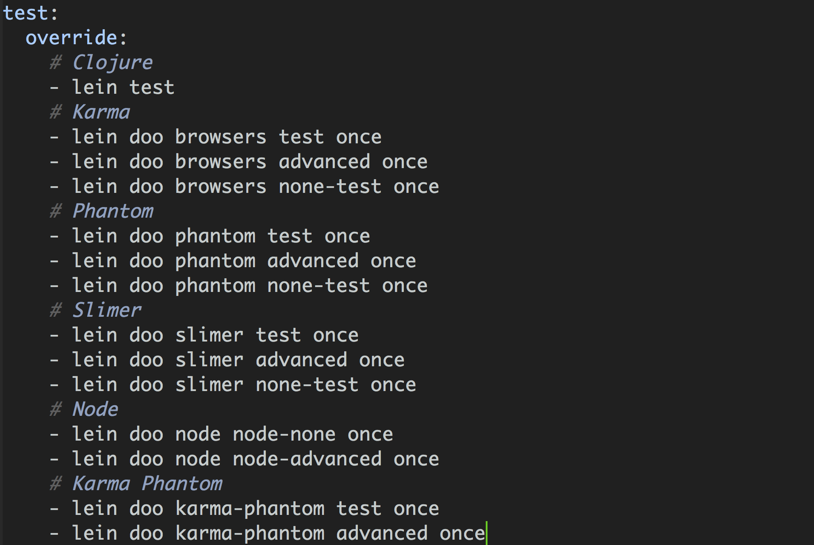